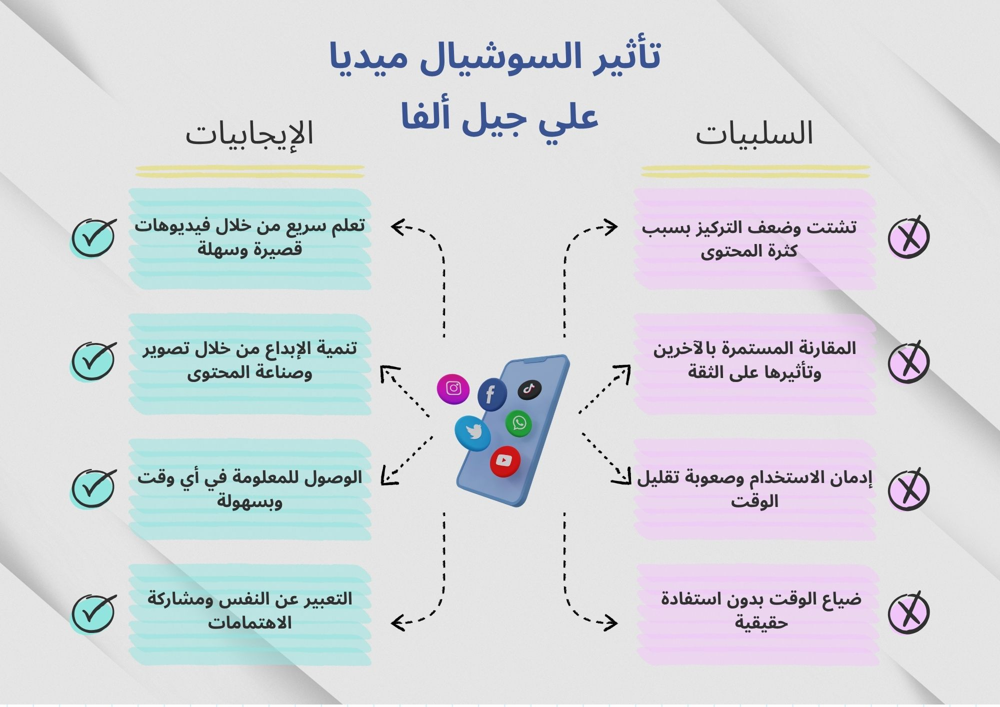
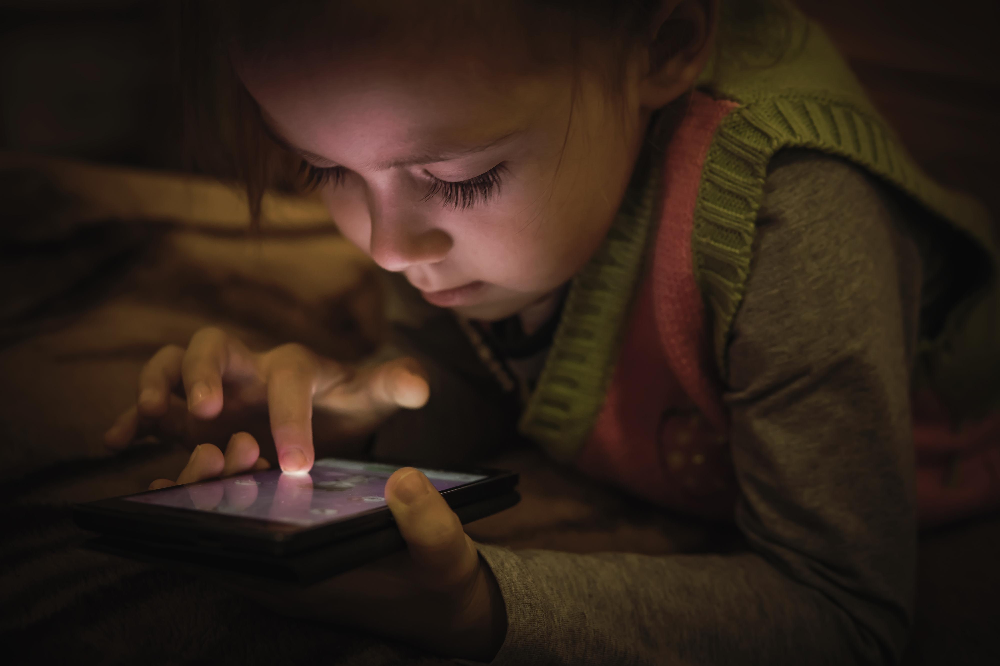

كيف يبدو حضور تيك توك داخل اليوم العادي؟
الفيديو يعطي صورة مباشرة عن طبيعة الحضور السريع والمستمر للمحتوى القصير داخل حياة جيل ألفا.
الفوائد والمخاطر في صورة واحدة
الإنفوغرافيك التالي يضع الجانبين معًا: ما الذي تمنحه المنصات الاجتماعية لجيل ألفا، وما الذي قد تتركه من أثر سلبي على المدى القريب والبعيد.

لماذا يندمج جيل ألفا بهذه السرعة؟
لأن المنصة لا تطلب جهدًا كبيرًا: كل شيء سريع، مرئي، واضح، وقابل للفهم أو التقليد خلال لحظات قليلة.
قوة تيك توك تبدأ من سهولته. لا يحتاج الطفل أو اليافع إلى قراءة طويلة أو شرح مسبق حتى يدخل في التجربة. المحتوى يصل جاهزًا: صورة، صوت، حركة، وتعليق يشرح أو يثير الفضول أو يفتح بابًا جديدًا للمشاهدة التالية.
ومع تكرار هذه الدورة، يصبح التطبيق جزءًا من اليوم لا استثناء فيه. يُفتح بسرعة، يُستهلك بسرعة، لكنه يترك أثره ببطء. وهذا ما يجعله أكثر من مجرد وسيلة تسلية.

كيف يمسك التطبيق بالتركيز؟
ليس عبر فيديو واحد طويل، بل عبر تدفق سريع يجعل الانتباه ينتقل من مقطع إلى آخر دون مقاومة كبيرة.
ما يفعله تيك توك بالانتباه لا يعتمد على الشدّ المباشر فقط، بل على التوقع المستمر. كل تمريرة تحمل احتمال مقطع أكثر طرافة أو أكثر قربًا من الاهتمام الشخصي. هذا الترقب نفسه يصبح جزءًا من المتعة.
النتيجة هي أن الانتباه لا يُستهلك في دفعة واحدة، بل يُجمَع تدريجيًا. وهذا يفسر لماذا قد يبدو الاستخدام قصيرًا في كل مرة، لكنه يتكرر بسهولة طوال اليوم.
لماذا يبدو مفيدًا ومحببًا في الوقت نفسه؟
لأن المنصة لا تقدم التعلّم كدرس، بل كجزء من المشاهدة اليومية: سريع، واضح، وبسيط.

كثير من محتوى تيك توك يبدو بالنسبة إلى جيل ألفا ممتعًا ومفيدًا في الوقت نفسه. معلومة سريعة، حيلة تعليمية، فكرة فنية، تجربة بسيطة، أو شرح بصري واضح. هذه الصيغة تجعل التعلم يبدو أخف من الطرق التقليدية.
كما أن قرب صناع المحتوى من لغة الجيل وأسلوبه يمنح المشاهدة شعورًا بالحميمية، وكأن المعرفة تأتي من شخص يشبههم لا من مصدر بعيد أو رسمي جدًا.
ما الذي يتغير في اللغة والذوق والصورة عن الذات؟
المنصة لا تعرض ما هو رائج فقط، بل تشارك في صنع ما يبدو عاديًا أو جميلًا أو جديرًا بالتقليد.
اللغة اليومية
كلمات جديدة، عبارات مكررة، ونبرة أداء تنتقل من الشاشة إلى البيت والمدرسة. التأثير هنا لا يقف عند المحتوى، بل يمتد إلى طريقة التعبير نفسها.
الذوق الشخصي
الملابس، الموسيقى، الصور، وحتى شكل اليوميات المصوّرة. كل هذا يتأثر بما تكرره المنصة وتدفعه إلى الواجهة باستمرار.
الصورة عن الذات
الطفل أو اليافع لا يشاهد فقط، بل يقارن أيضًا. ومع الوقت، تصبح بعض النماذج المتكررة مرجعًا ضمنيًا لما يبدو ناجحًا أو جذابًا أو مستحقًا للانتباه.
ترتيب الأولويات
ما يصل بكثافة وسرعة يبدو أكبر من حجمه الحقيقي. وهكذا يعاد ترتيب ما يبدو مهمًا داخل الذهن اليومي.


أين تبدأ الكلفة الحقيقية؟
المشكلة لا تبدأ فقط من طول الوقت، بل من الأثر التراكمي على الانتباه والمقارنة والقدرة على البقاء مع إيقاع أبطأ.
الخطر الأول هو الاعتياد على السرعة. كلما تكررت المقاطع القصيرة والمحفزات السريعة، أصبحت الأنشطة الأبطأ أقل جاذبية: قراءة طويلة، شرح متدرج، أو حتى الانتظار بدون مكافأة فورية.
وهناك أيضًا المقارنة المستمرة. كثير من الصور التي تمر يوميًا تحمل نماذج مثالية عن الشكل أو النجاح أو المتعة أو الشعبية. ومع التكرار، يتحول هذا إلى ضغط خفي يصعب التعبير عنه بوضوح.
ثم تأتي المساحة الرمادية بين الترفيه والإعلان والمعلومة. ما يبدو بسيطًا وواضحًا على الشاشة قد يكون أقل دقة أو أكثر توجيهًا مما يبدو عليه في اللحظة الأولى.

لماذا لا يكفي المنع أو التخويف؟
لأن التطبيق يمنح هذا الجيل أشياء حقيقية: المتعة، السرعة، القرب، والانتماء إلى ما يبدو حيًا ومتجددًا.

من السهل وصف المنصة بأنها مشكلة، لكن هذا لا يكفي لفهم سبب تعلق جيل ألفا بها. فهي تقدم لهم محتوى سريعًا، وشعورًا بالمشاركة، ونماذج جاهزة للتقليد، وطرقًا سهلة للوصول إلى ما يثيرهم أو يفيدهم.
لذلك، فإن التعامل الواقعي لا يقوم على المنع وحده، بل على بناء بدائل قوية: محتوى جيد، مساحات أبطأ لكنها جذابة، وحضور بشري حقيقي يجعل الشاشة أقل قدرة على احتلال اليوم كله.
تيك توك لا يعرض العالم فقط، بل يشارك في تشكيله داخل هذا الجيل
ولهذا لا يمكن النظر إليه كوسيلة ترفيه منفصلة عن بقية الحياة اليومية.
التأثير الأهم لا يكمن في الفيديو الواحد، بل في التكرار المستمر. ما يتكرر يوميًا يصنع الإيقاع، وما يصنع الإيقاع يشارك في تشكيل العادة، وما يشكل العادة يترك أثره على الانتباه والذوق والصورة عن الذات.
لهذا فإن السؤال الأهم لم يعد: هل يستخدم جيل ألفا تيك توك؟ بل: كيف يمكن فهم حضوره وتنظيمه، بحيث لا يصبح التطبيق هو المعيار الوحيد لما يستحق الوقت والانتباه؟